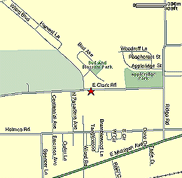

|
Directions to Ford! |
|
|  | Ford Elementary - 2440 Clark Rd., Ypsilanti Take State St. to N. University and turn right. Follow N. University until it turns into Geddes. Turn right when Geddes dead ends onto Huron, and then turn right after the bridge so you are back on Geddes. Take Geddes into Ypsilanti all the way to Prospect St., turn right onto Prospect. Take Prospect to Clark Rd. Turn left on Clark Rd. and continue for about 2 miles. Ford is on your right. For more info, contact Patrick Cassady |